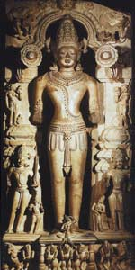

Сурья (санскр. Surya-s "сонце") - ім'я індійського сонячного божества = уособлення сонця, зустрічається вже в Рігведі, де воно займає більш чільне місце, ніж в пізнішій індійській міфології. Його прославляння присвячено десять окремих гімнів Рігведи.
Сурья, в ведійської і індуїстської міфології сонячне божество, всевидюче око богів, особливо Мітри та Варуни, іноді Агни. Згідно з міфами, він - всезнаючий і всевидюче, озирається весь світ, що поглядає на добро і зло, у нього швидкий погляд. Він народжений на Сході, вітання співаками; бог виходив з небесних воріт і протягом дня обходив землю і небо, обмежуючи день і ніч. Сурья рухався по небу без коней, хоча деякі міфи згадують сімку його скакунів.
Основна дія Сурьі - випромінювання світла; їм він осявав світ і розганяв темряву, знищував хвороби, ворогів. Шлях Сурьі вказано Адітья, юними сонячними богами, які співвідносилися з дванадцятьма місяцями.
Батько Сурьі - Дьяус, втілення неба, мати - прародителька богів Адіті. Ушас, божество ранкової зорі, згадується як його дружина. Згодом Сурья перетворився в одного з локапал і став хранителем світу на південному сході. Так як ім'я Сурья завжди означає самий вогненна куля сонця, то Сурья є найбільш конкретним з усіх сонячних божеств індійської міфології і зв'язок його зі світилом ніколи не втрачається. Божественне світло Сурья на небі порівнюється з особою великого Агні, бога вогню. Часто говориться про око Сурьі; потім сам Сурья називається оком богів Мітри, Варуни, Агні або богів взагалі (світанок приводить із собою око богів); сурья називається також оком всіх тварюк, смотрящим крізь небо, землю, води, владикою очей, до якого йдуть очі покійного. Сурья належить всім людям і встає як їх пробудітель; звідси він - душа і страж всього рухомого і далі нерухомого. Він має колісниці, їх вабить одним конем, або взагалі кіньми, або кобилицями, іноді сім'ю кіньми, які отримують також епітет швидких.
Шлях Сурье готують світлі Адітья - Мітра, Варуна, Арьяман; Пушан є його послом; зоря відкриває або виробляє Сурью; вона ж є його дружиною. Сурья, як син Адіті, отримує також ім'я Адітья або Адітея. Його батько - небо, Дьяуш (Dyaush); він народжений богами. Боги підняли його з океану, де він був прихований; вони ж помістили його на небі, як одну з форм Агні. Багато окремі боги є як його батьки або творці. Індра-Вішну народив його; Індра-Сома підняв його разом зі світлом; Індра-Варуна або Мітра-Варуна підняли його на небо; Сома породив його і помістив в ньому світло. У такій же ролі є і Агні. Творець Дхатр (Dhatr) зробив сонце, як і місяць і т. Д. Нерідко Сурья зображується у вигляді птаха, що летить червоного кольору, порівнюється з летять орлом і навіть прямо ототожнюється з ним. Цілюща сила сонця веде до уособлення Сурьі у вигляді бика, іноді строкатого, іноді білого. Коні Сурьі зображують його промені (числом сім).
Іноді Сурья зображується у вигляді неживого предмета: він - дорогоцінний камінь, перл неба, строкатий камінь, поміщений в середині неба, колесо, колісниця, блискуча зброя, яке Мітра-Варуна закриває хмарами і дощем. Сурья торжествує над похмурими демонами і відьмами, вимірює дні, продовжує час життя, проганяє хвороба, заразу і погані сни. Жити - значить бачити, як піднімається сонце. Всі тварини залежать від Сурьі, і небо підтримується ім. Епітет Вішвакарман = творець всього - також додається до Сурье. Він - божественний жрець богів. Єдиний зустрічається в ведах міф про Сурье розповідає, що Індра переміг Сурью і викрав його колесо. У цьому міфі можна бачити зображення грози, затьмарює сонце. Родинний Сурье образ знаходимо в Авесті, де сонце володіє швидкими кіньми і називається оком Агурамазди.
У пізнішій індійській міфології Сурья стає блідим другорядним божеством, з яким зв'язуються малохарактерні легенди: він є батьком близнюків Ашвинов, народжених їм від німфи Ашвіни. У Рамаяне і Пуранах Сурья є сином мудреця Кашьяпа і Адіті. У Рамаяне він називається також сином Брахми. Його блиск був такий сильний, що дружина його Санджня дала йому Чхаю (Chaya = тінь) в услужніци і сама пішла в ліс, щоб віддатися благочестивим вправам. Коли Сурья привів її додому, її батько, Вішвакарма, поклав світило на свій токарний верстат і відрізав восьму частину його блиску. Обрізки сонця впали кометами на землю; з них Вішвакарма зробив диск Вішну, тризуб Шиви і зброю інших богів. У Махабхараті син Сурьі, Ману Вайвасвата, є батьком Ікхшваку, від якого бере початок Сурьяванша - сонячна династія. У Бішной-Пуране розповідається, що Сатраджіт бачив Сурью в його власному образі, "низького зросту, з особою, як полірована червона мідь і червоними очима".
Лише деякі з цих пізніших міфів мають зв'язок з образом водійського Сурьі; всі вони представляють повний занепад фантазії і міфологічного творчості в порівнянні з яскравими і поетичними рисами водійського міфу. Епітети, що додаються Сурье, досить численні, особливо в пізніших джерелах. Культ Сурьі досі ще дотримується в Оріссі. Сурье присвячені багато храмів, замечательнейший з яких - в Канараке, на березі моря, в 16 милях на північний захід від Джаганнатха. Зображення Сурьі в сучасних індійських храмах малюють його з головою, оточеній променями, іноді з 4 руками, іноді з двома; в одній він тримає лотос, в іншій своє колесо, сидячи на п'єдесталі з лотоса або на блискучій одноколці, їх вабить семіголового конем смарагдового кольору або сім'ю зеленими кіньми. Іноді перед ним стоїть гарна жіноча фігура - Прабха (блиск), його подруга, а також візник Аруна і різні зброєносці.